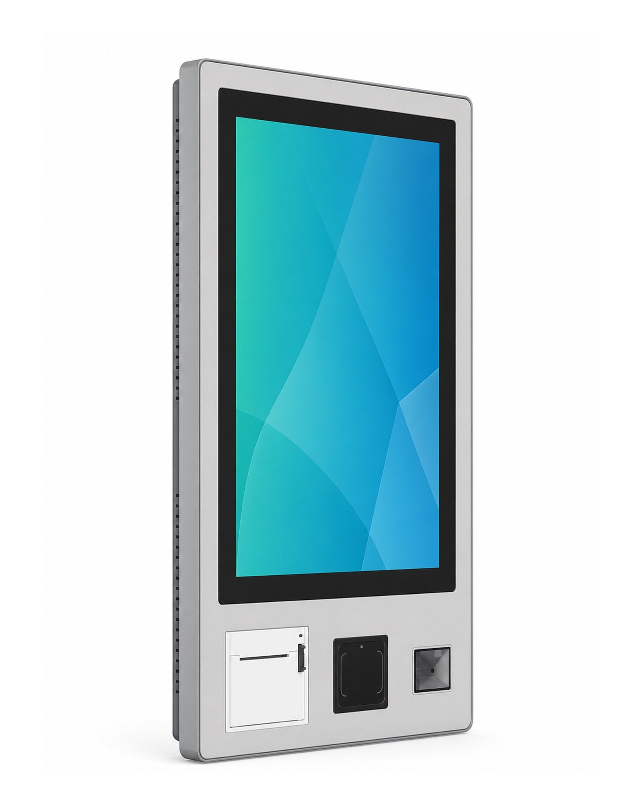
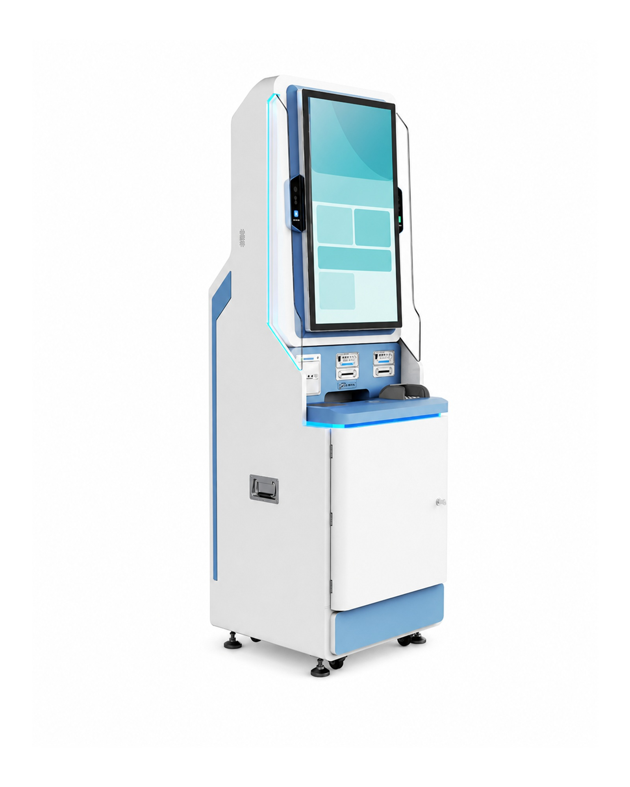
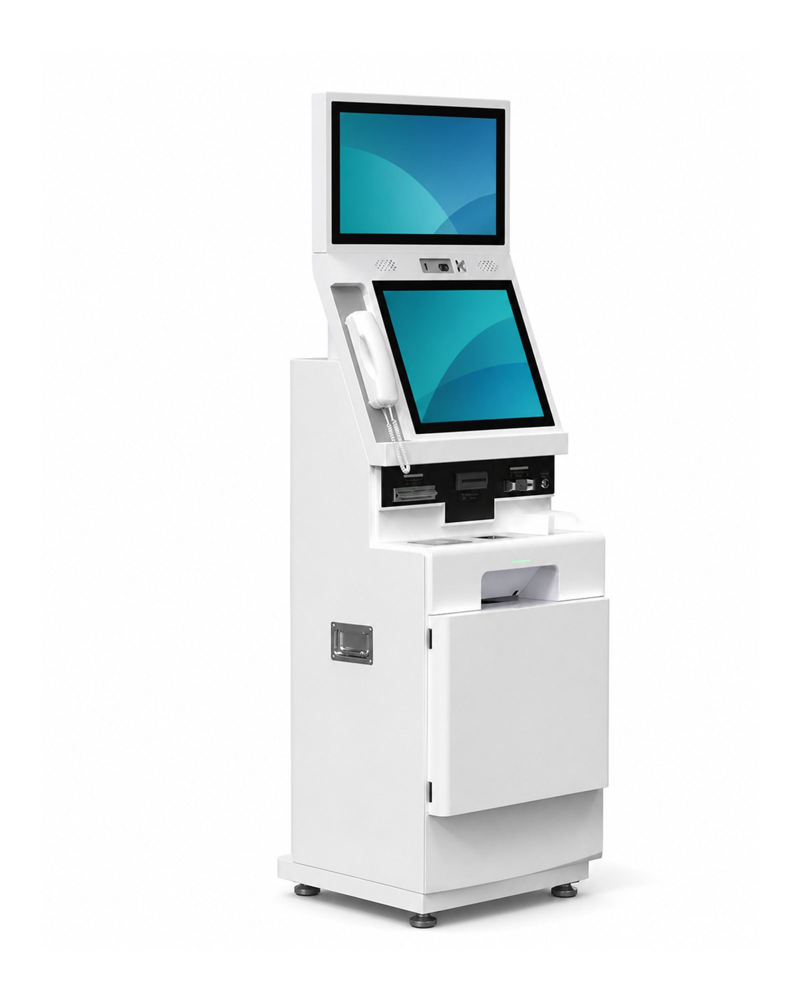
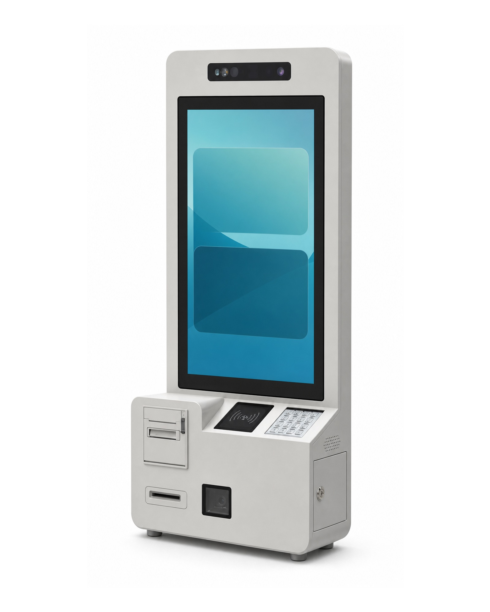
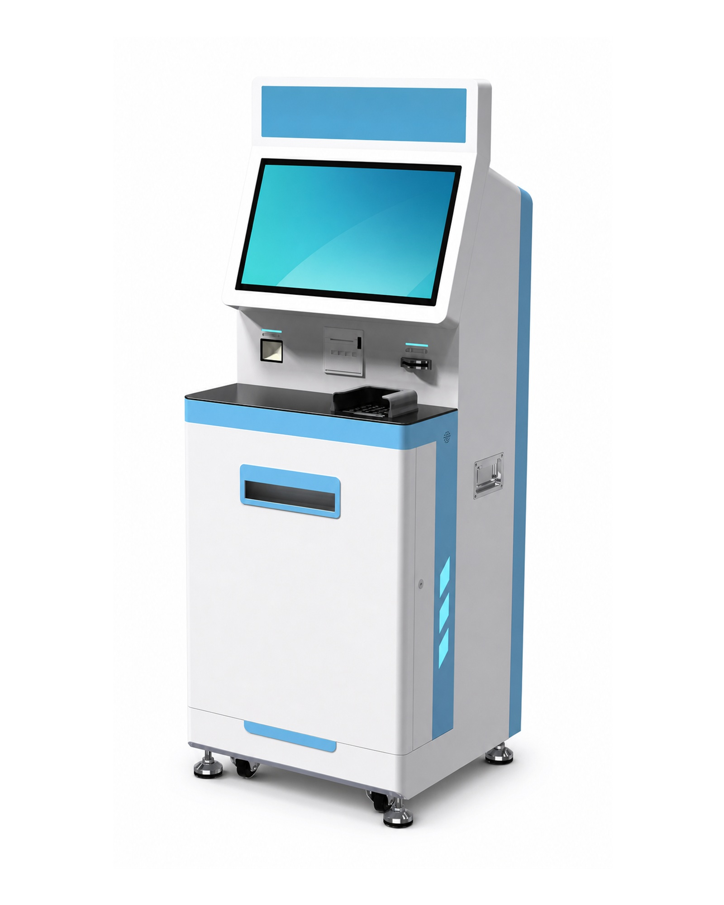
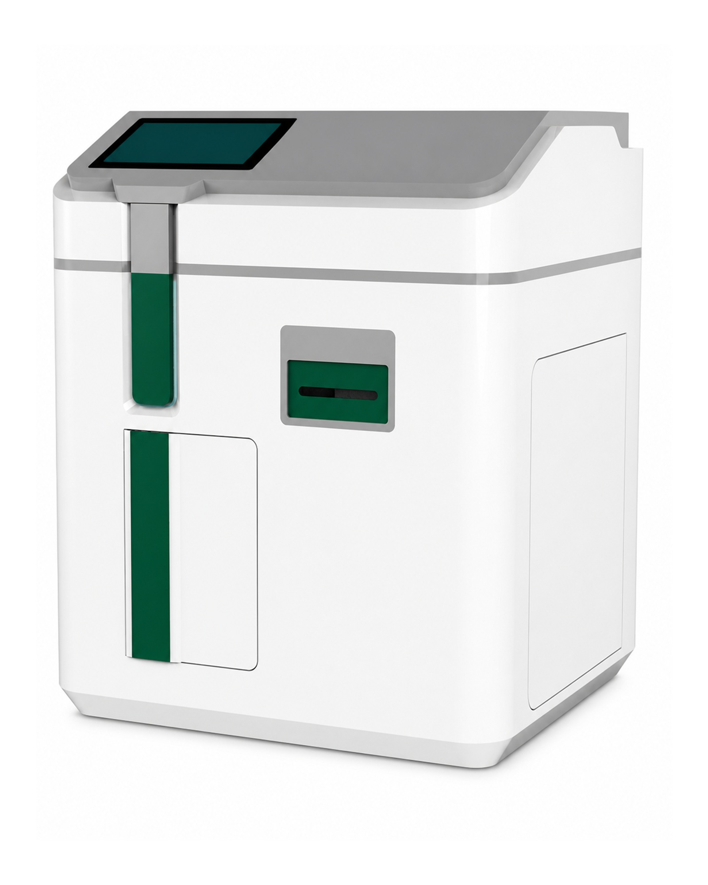
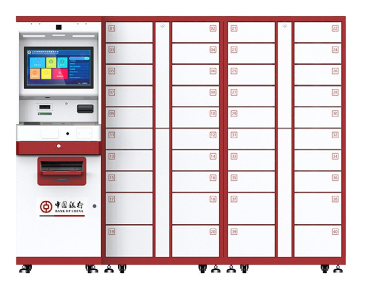
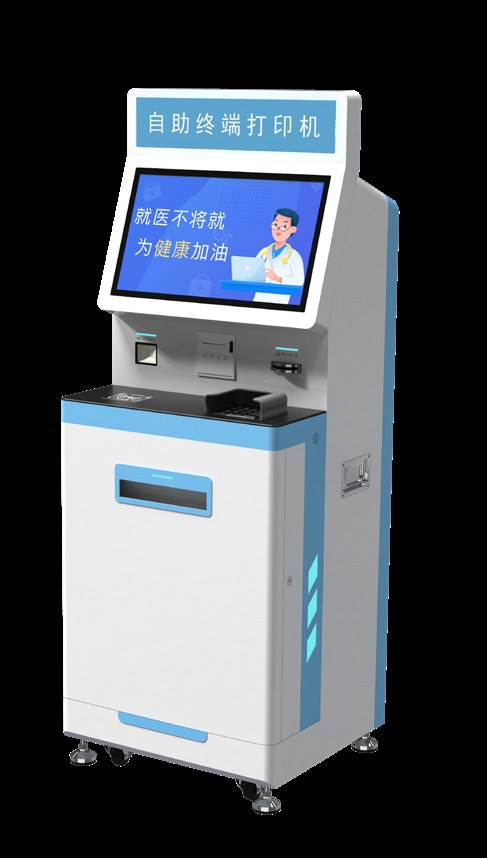
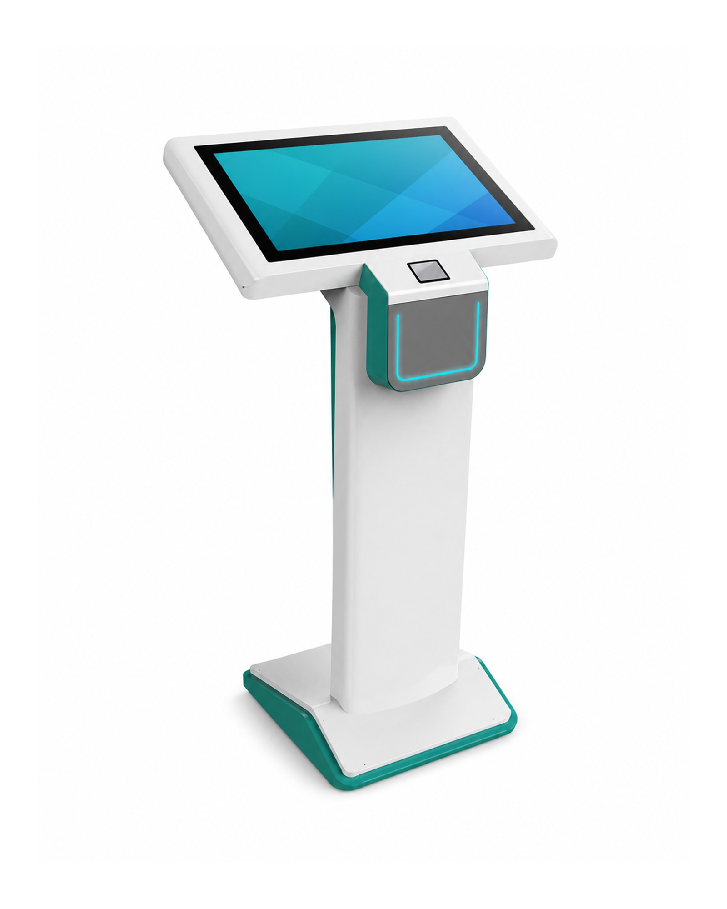

Explore proven enclosure formats for healthcare, public service, printing, document handling and branch operations. Each platform is configured around your local software, peripherals and branding requirements.


Wall-mounted and floor-standing platforms for patient check-in, identity or card reading, queue guidance, assisted payment and report output. The enclosure and module layout are adapted to the integrator's workflow.
| Reference formats | Wall-mounted, compact floor-standing, large-screen floor-standing and medical record printing |
| Screen options | 21.5", 32" and 43" reference configurations |
| Common modules | Touch display, receipt/report printer, scanner, camera and project-specified card or identity reader |
| Customization | Color, logo, front panel layout, peripheral selection and software pre-installation |


Self-service terminals for public service halls, document handling, information query, ticketing, queue management and utility service workflows. Hardware can be configured to match the local software and service process.
| Reference formats | Dual-screen, document-camera, compact service and 32" public-service terminals |
| Screen options | 21.5" single/dual-screen and 32" reference configurations |
| Common modules | Document camera, printer, QR/barcode reader, camera, NFC/RFID and project-specified reader modules |
| Typical use | Public service, utility payment, document processing, queue and information service |


Terminals for report printing, ticket printing, certificate printing, receipt output and document collection workflows. The printer area, paper path and output slot can be adapted to the project.
| Reference formats | Film printing, report printing and compact order-collection terminals |
| Screen options | 19" and 21.5" touch-display reference configurations |
| Printer options | Thermal printer, report printer or document printer according to workflow |
| Input modules | QR/barcode scanner, ID/card reader, camera and touch input |
| Project fit | Hospitals, public service halls, campuses, ticketing and document service counters |


Purpose-built enclosures for controlled document pickup, uniform or item dispensing and card issuing. Mechanical, electronic and storage modules are engineered around the project process.
| Reference formats | Document locker, automated dispensing cabinet and card-issuing terminal |
| Touch display | 10.1", 15.6" or 19" reference configurations |
| Common modules | Printer, camera, QR scanner, NFC, card-issuing mechanism, locks and status indicators |
| Typical use | Document pickup, controlled item issue, card service and internal service points |

Terminal and gate formats for branch service, invoice output, information query, ticket vending and controlled pedestrian access. Product selection depends on the user flow and required mechanical modules.
| Reference formats | Branch service kiosk, invoice printer, information terminal, ticket vending kiosk and access gate |
| Core functions | Printing, scanning, information query, ticket issue and project-defined access control |
| Installation | Floor-standing, lobby, branch office and public venue configurations |
| Customization | Branding, lightbox/signage, enclosure layout and module configuration |
Module availability depends on model structure, target market and project requirements. All specifications are reference configurations and are confirmed through the final BOM and sample approval.
Screen size and mounting style selected by application and available enclosure.
Receipt, report, ticket or document printing modules according to workflow.
Camera options for check-in, identity workflows or remote support scenarios.
QR, barcode or document scanning options for service and ticketing flows.
ID, membership, NFC/RFID and other reader options by market requirement.
Color, logo, front panel layout, lightbox, packaging and model appearance support.
Speaker, microphone, status light and user guidance elements as needed.
Windows, Android or Linux-based configurations can be discussed by project.
Share your application, country, quantity and required modules. We help confirm a manufacturable configuration instead of forcing a fixed model.
Application scenario, screen size, software environment, peripheral modules and installation method.
Choose an existing GIVIN reference platform or define an ODM enclosure based on your workflow.
Confirm layout, branding, module position, interface and packaging before volume production.
Manufacturing, inspection, packing and export coordination for overseas project buyers.